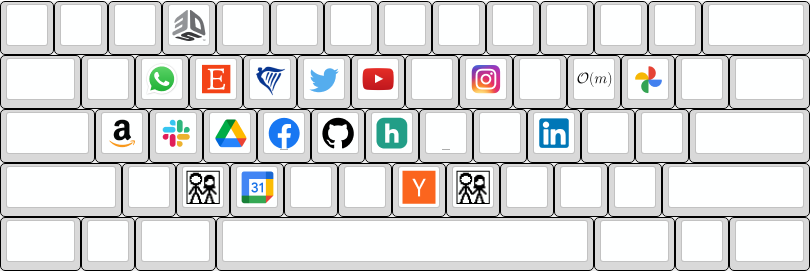
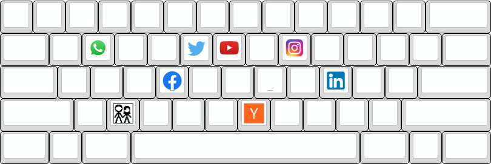

Have you ever noticed how easy it is to end up on some sites? You basically just think about the site and *boom* it's right there! It's simultaneously cool and a bit worrying. But it's also interesting to think about as part of the process of coming up with a good name for a site. Can your site be one of those on speed-dial?
What I'm talking about here are those routes from a new tab to a website, which only take two key presses—namely, one letter (or number) followed by ENTER. This is enabled by any sort of autocomplete in a browser's URL. I mainly still use Google Chrome so this post uses their "omnibox".
When thinking of a name do you want to steer clear of highly contested keys, or out-compete another site for their coveted position? Can you pick your site's first letter [0] to gain a position on users' keyboards?
Here are all the keys on my keyboard where the first suggestion in Google Chrome's omnibox is a website, so that hitting LETTER + ENTER will take me there.
Some initial notes:
Another surprise was how many of these I wasn't even of. Here are all the keys where I am actually aware of the single letter shortcuts, so that the combination above is muscle memory and effectively one movement. For example, I would not (before writing this) have expected E + ENTER to take me to Etsy, so would only notice I could do that after observing the omnibox suggestions. For Hacker News however, I am well aware that pressing N + ENTER takes me right to the orange website and do so frequently. There are also probably some where—not expecting a single letter hit—I would just type a few of the word's letters straight away, e.g. "sla" for Slack.
This feels a bit more familiar. I've definitely used all of these (though don't really use Facebook anymore) and the only one I have any regrets about is the one true hellsite on the internet—LinkedIn.
Here's the full list of all keys (excluding numbers that don't have an occupant, and punctuation—which I think would probably be very difficult if not impossible to place for depending on how the omnibox actually works), their current occupant on my keyboard, and how difficult it would be to displace them—0 being trivial, and 3 quite difficult.
| Key | Current Occupant | Difficulty |
|---|---|---|
| A | Amazon | 2 |
| B | 0 | |
| C | Google Calendar | 2 |
| D | Google Drive | 1 |
| E | Etsy | 1 |
| F | 2 | |
| G | My Github | 3 |
| H | Hover | 1 |
| I | 2 | |
| J | 0 | |
| K | 0 | |
| L | 2 | |
| M | xkcd (mobile) | 1 |
| N | Hacker News | 3 |
| O | This website! | 3 |
| P | Google Photos | 2 |
| Q | 0 | |
| R | Ryanair | 1 |
| S | Slack | 1 |
| T | 3 | |
| U | 0 | |
| V | 0 | |
| W | Whatsapp Web | 3 |
| X | xkcd | 3 |
| Y | Youtube | 3 |
| Z | 0 | |
| 3 | 3D Systems | 1 |
In closing, it's possibly worth thinking about this when coming up with a name for a new project, as if you can secure a good key on your users' keyboards, they'll have a much easier time navigating to your site.
It would be interesting to see analyses done across groups of people, and also fun to make a tool that would create the keyboard visualisations above automatically.
As a related aside: A similar idea—effectively just a new form of SEO—can also be applied to other things, like content for Netflix. If you can reduce the amount of work people have to do with a tiny remote on an alphabetically ordered keyboard, they will thank you. A fun metric to compute would be the number of clicks it would take for a given title to be the first to appear in the search results—which would take in the keyboard layout, and the catalog of content (and if you want to get really fancy, you could average over the different content catalogs present in all the geographies where your title will be the same). I expect a lot more Aaron- and aardvark-based content.
Published 2022-11-20